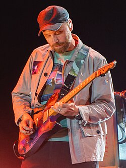

- Chris

- Christopher Anthony John Martin
- (Exeter, 2 de março de 1977)
- Carreira Musical: (1996-Presente)
- Cantor, compositor, músico, produtor musical e filantropo inglês
- Vocalista da Coldplay
- Jonny Buckland

- Jonathan Mark Buckland
- (Londres, 11 de setembro de 1977)
- Carreira Musical: (1996-Presente)
- Músico inglês
- Guitarrista da Coldplay
- Will Champion (Baterista)

- William Champion
- (Southampton, 31 de julho de 1978)
- Carreira Musical: (1996-Presente)
- Músico inglês
- Baterista da Coldplay
- Guy Berryman (Baixista)

- Guy Rupert Berryman
- (Kirkcaldy, 12 de abril de 1978)
- Carreira Musical: (1998-Presente)
- Multi-Instrumentista Escocês
- Baixista da Coldplay